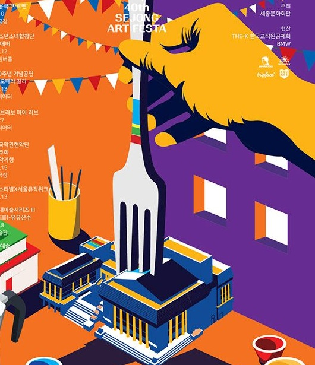
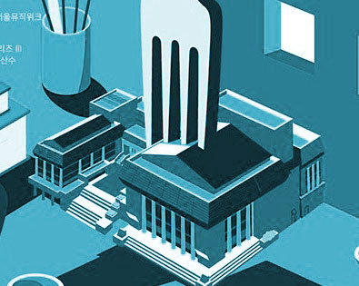
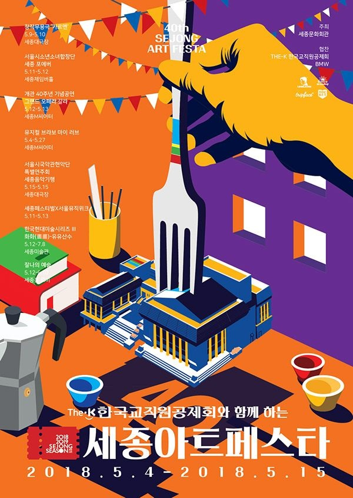

창작무용극 ‘그날의’
진주대극장 · 무대 위에서 펼쳐지는 몸의 언어
THE K와 함께하는 예술의 축제
예술로 만나는 새로운 시선,
도시를 물들이는 창작의 순간
진주문화회관 · 진주성 · 진주미술관

40thA CITY FULL OF ART
전시와 공연, 작가와 관객이 만나는 진주 아트 페스타. 다채로운 장르의 예술을 한자리에서 경험하고, 익숙한 도시에서 새로운 영감을 발견해 보세요.

FESTIVAL진주대극장 · 무대 위에서 펼쳐지는 몸의 언어
진주 체임버홀 · 목소리로 그리는 풍경
진주M씨어터 · 시간을 잇는 특별한 무대
진주미술관 · 오늘의 감각을 담은 작품들
김도윤 · 회화 / 설치
박서연 · 현대무용
이하늘 · 미디어아트
진주문화회관 및 진주문화회관 일대
진주성

지하철 5호선 광화문역 1·8번 출구
버스 진주문화회관 정류장 하차